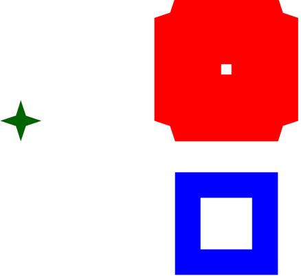
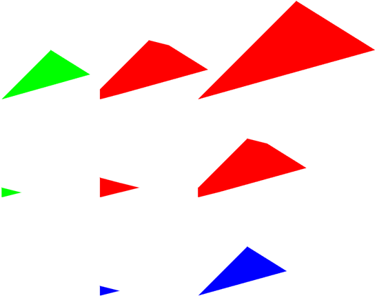
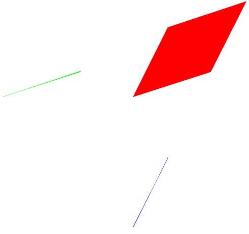
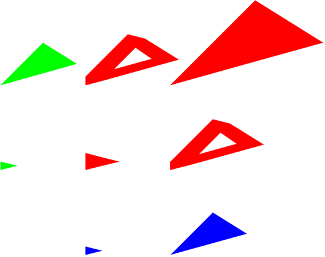

在本教程中, 我们将实现一个计算两个多边形集合的 Minkowski 和的算法. 两个多边形集合的 Minkowski 和就是这两个多边形集合的卷积, 定义为: 把两个多边形集合中所有点对求和后得到的点集. 两个点的求和在 Boost.Polygon 中通过 convolve 函数完成, 该函数用于 point_concept. 类似地, 也存在 convolve 函数, 用于 rectangle_concept. 两个多边形集合的卷积以多边形集合作为输出. 下图展示两个多边形卷积的一个示例. 可以想象绿色星形的中心点在蓝色画框形状内部自由滑动, 涂绘星形所触及的区域, 从而得到膨胀的红色画框.

上图就是用本教程给出的代码生成的. 可以看到, Minkowski 和算法应支持可能带孔的非凸多边形, 还应支持两个输入多边形集合中的不相交多边形. 下面展示当每个输入多边形集合中包含多个多边形时的情形.

在这些示例中, 坐标系原点位于图像左下角, 输入多边形 x 与 y 位置之和把结果置于图像右上角. 上例中, 左下方的红色三角形是小蓝色三角形与小绿色三角形的卷积; 右上方的红色三角形是大蓝色三角形与大绿色三角形的卷积; 两个中等大小的红色多边形分别是小蓝三角形与大绿三角形、大蓝三角形与小绿三角形卷积的结果. 该测试用例经过精心设计以防止结果合并到一起, 尽管这种情况确实可能发生.
本教程中实现的 Minkowski 和算法非常简单, 它基于多边形边的卷积. 两条边的卷积很容易计算, 结果通常是一个平行四边形. 下图展示两条边卷积生成平行四边形的示例.

既然我们已明确边卷积函数的需求, 现在就来实现一个. 下面给出两条边卷积的代码, 以及本教程通篇会用到的一些类型定义. 本教程的代码可在 minkowski.cpp 中获取.
typedef boost::polygon::point_data<int>
point;
typedef boost::polygon::polygon_set_data<int> polygon_set;
typedef boost::polygon::polygon_with_holes_data<int> polygon;
typedef std::pair<point, point> edge;
using namespace boost::polygon::operators;
void convolve_two_segments(std::vector<point>& figure, const edge& a, const
edge& b) {
using namespace boost::polygon;
figure.clear();
figure.push_back(point(a.first));
figure.push_back(point(a.first));
figure.push_back(point(a.second));
figure.push_back(point(a.second));
convolve(figure[0], b.second);
convolve(figure[1], b.first);
convolve(figure[2], b.first);
convolve(figure[3], b.second);
}
这个卷积两条线段的函数只是将两条线段的端点按所有组合进行卷积, 得到平行四边形的四个点, 并按正确顺序填充到一个点向量中. 我们使用的是 Boost.Polygon 库的卷积两个点的函数以及库的点数据结构.
要计算两个多边形集合的卷积, 我们首先对两个多边形集合之间所有边对求卷积, 然后取这些卷积的并集. 有了卷积两条边的运算, 对两个多边形集合的所有边对求卷积就相当容易. 其结果是多边形集合周界的卷积, 但并未处理其内部区域的卷积. 为说明这一点, 我们展示只用全部边对卷积计算上例之一时的情形.

可以看到, 结果就如同小三角形沿着大三角形的周界滑动, 在中心留下一个孔洞——如果允许小三角形在大三角形内部自由滑动, 该孔洞本应被填满. Boost.Polygon 还提供了 convolve 函数, 用于 polygon_concept, 它把一个多边形对一个点卷积, 做的只是按该点的 x 与 y 值平移多边形. 为了填补两个多边形集合卷积结果的内部区域, 我们对每个多边形与另一个多边形的首个顶点执行全部多边形对卷积, 并将其合并到边卷积的并集中.
接下来, 我们把两个多边形集合的 Minkowski 和的其余部分实现为: 所有边对卷积的并集, 加上全部多边形对到点卷积. 首先实现一个函数, 对以点上的迭代器对表示的所有边对求卷积. 我们假定每个序列中第一个点等于最后一个点, 因为产生这些迭代器的多边形由 Boost.Polygon 的一般多边形构造算法生成.
template <typename itrT1, typename itrT2>
void convolve_two_point_sequences(polygon_set& result, itrT1 ab, itrT1 ae, itrT2
bb, itrT2 be) {
using namespace boost::polygon;
if(ab == ae || bb == be)
return;
point prev_a = *ab;
std::vector<point> vec;
polygon poly;
++ab;
for( ; ab != ae; ++ab) {
point prev_b = *bb;
itrT2 tmpb = bb;
++tmpb;
for( ; tmpb != be; ++tmpb) {
convolve_two_segments(vec, std::make_pair(prev_b,
*tmpb), std::make_pair(prev_a, *ab));
set_points(poly, vec.begin(), vec.end());
result.insert(poly);
prev_b = *tmpb;
}
prev_a = *ab;
}
}
利用上面定义的函数, 我们可以实现一个函数, 计算由点迭代器对表示的边与多边形集合中所有边之间所有边对的卷积. 我们只需针对输入点序列以及多边形容器中所有外壳与孔洞点序列调用 convolve_two_point_sequences.
template <typename itrT>
void convolve_point_sequence_with_polygons(polygon_set& result, itrT b, itrT e,
const std::vector<polygon>& polygons) {
using namespace boost::polygon;
for(std::size_t i = 0; i < polygons.size(); ++i) {
convolve_two_point_sequences(result, b, e,
begin_points(polygons[i]), end_points(polygons[i]));
for(polygon_with_holes_traits<polygon>::iterator_holes_type
itrh = begin_holes(polygons[i]);
itrh != end_holes(polygons[i]); ++itrh)
{
convolve_two_point_sequences(result, b, e,
begin_points(*itrh), end_points(*itrh));
}
}
}
利用上面定义的函数, 我们可以实现一个函数, 计算两个多边形集合所含多边形之间所有边对的卷积. 我们还会把每个多边形与另一集合中每个多边形的首个顶点卷积, 以填补结果的内部.
void convolve_two_polygon_sets(polygon_set&
result, const polygon_set& a, const polygon_set& b) {
using namespace boost::polygon;
result.clear();
std::vector<polygon> a_polygons;
std::vector<polygon> b_polygons;
a.get(a_polygons);
b.get(b_polygons);
for(std::size_t ai = 0; ai < a_polygons.size(); ++ai) {
convolve_point_sequence_with_polygons(result,
begin_points(a_polygons[ai]),
end_points(a_polygons[ai]), b_polygons);
for(polygon_with_holes_traits<polygon>::iterator_holes_type
itrh = begin_holes(a_polygons[ai]);
itrh != end_holes(a_polygons[ai]); ++itrh)
{
convolve_point_sequence_with_polygons(result,
begin_points(*itrh),
end_points(*itrh), b_polygons);
}
for(std::size_t bi = 0; bi < b_polygons.size(); ++bi) {
polygon tmp_poly = a_polygons[ai];
result.insert(convolve(tmp_poly, *(begin_points(b_polygons[bi]))));
tmp_poly = b_polygons[bi];
result.insert(convolve(tmp_poly, *(begin_points(a_polygons[ai]))));
}
}
}
我们用下面给出的代码测试两个多边形集合的卷积, 该代码生成本教程展示的第一个示例.
polygon_set a, b, c;
a += boost::polygon::rectangle_data<int>(0+300, 0, 200+300, 200);
a -= boost::polygon::rectangle_data<int>(50+300, 50, 150+300, 150);
std::vector<polygon> polys;
std::vector<point> pts;
pts.push_back(point(-40, 0+300));
pts.push_back(point(-10, 10+300));
pts.push_back(point(0, 40+300));
pts.push_back(point(10, 10+300));
pts.push_back(point(40, 0+300));
pts.push_back(point(10, -10+300));
pts.push_back(point(0, -40+300));
pts.push_back(point(-10, -10+300));
pts.push_back(point(-40, 0+300));
polygon poly;
boost::polygon::set_points(poly, pts.begin(), pts.end());
b+=poly;
polys.clear();
convolve_two_polygon_sets(c, a, b);
输出 (a 为蓝色, b 为绿色, c 为红色):
本教程到此结束, 我们介绍了如何把多边形的 Minkowski 和实现为多边形集合的卷积, 它基于 Boost.Polygon 库提供的较简单卷积特性所生成几何的布尔 OR 运算.
| 版权: | 版权所有 © Intel Corporation 2008-2010. |
|---|---|
| License: | 按 Boost 软件许可 1.0 版 (Boost Software License, Version 1.0) 分发. (随附文件 LICENSE_1_0.txt 或复制于 http://www.boost.org/LICENSE_1_0.txt) |